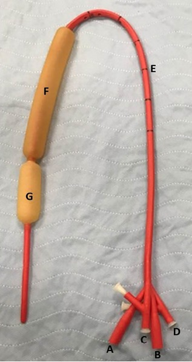

Заболевания печени. Портальная гипертензия
Абсцессы печени
Печень — хорошо защищённый орган: двойное кровоснабжение, богатая ретикулоэндотелиальная система, постоянный ток желчи. Кажется, что гнойник в ней — редкая экзотика, встречающаяся разве что при тяжёлом иммунодефиците. На деле абсцессы печени возникают при вполне банальных заболеваниях — холецистите, аппендиците, язвенном колите, — и именно запоздалое распознавание делает их опасными.[Кузин, с. 354]
Абсцесс печени — это ограниченное скопление гноя, образующееся вследствие внедрения в печёночную паренхиму микроорганизмов или паразитов. По происхождению различают бактериальные (микробные) и паразитарные абсцессы, а также нагноившиеся эхинококковые кисты.[Кузин, с. 354]
Бактериальные абсцессы проникают в ткань печени четырьмя путями. Чаще всего — билиарным: по ходу желчных протоков при механической желтухе и холангите, на долю этого пути приходится 30—40 % всех случаев. Абсцесс, возникший именно так, называют холангиогенным — то есть рождённым из желчного протока; он нередко бывает множественным и сопровождается желтухой, поскольку желчные ходы инфицированы на всём протяжении. Второй путь — венозный, по воротной вене, при деструктивном аппендиците, холецистите или неспецифическом язвенном колите — даёт около 20 % случаев. Третий — гематогенный, по печёночной артерии: при сепсисе и бактериемии любой этиологии микроорганизмы разносятся с током крови и оседают в паренхиме. Четвёртый — контактный: гнойник распространяется непосредственно из соседних органов при прорыве эмпиемы желчного пузыря, пенетрирующей язве желудка или поддиафрагмальном абсцессе. Отдельно выделяют криптогенные абсцессы — тоже около 20 % — когда источник инфекции найти не удаётся; примерно 30 % абсцессов возникает после операций на органах брюшной полости. Возбудителями служат кишечная палочка, энтеробактер, клебсиелла, стрептококки; почти в 50 % высевается неклостридиальная анаэробная флора — бактероиды и пептострептококки.[Кузин, с. 354]
Амёбные абсцессы встречаются в 4—5 раз реже бактериальных. Они характерны для регионов с широким распространением кишечного амебиаза — Закавказья, Средней Азии, Казахстана. Заражение происходит алиментарным путём: из просвета кишечника Entamoeba hystolytica проникает в воротную вену и достигает паренхимы печени, вызывая расплавление ткани объёмом от нескольких миллилитров до 1—3 литров. Содержимое такого абсцесса имеет характерную шоколадно-бурую окраску — типа томатной пасты — что сразу отличает его от бактериального гнойника с обычным жёлто-зелёным гноем. У 10—15 % больных к амёбному процессу присоединяется и микробная флора, что существенно утяжеляет течение.[Кузин, с. 356]
Сравнить оба варианта удобно с помощью таблицы ниже, но прежде чем вы к ней обратитесь, разберём главные различия словами — так они запомнятся лучше.
| Признак | Бактериальный абсцесс | Амёбный абсцесс |
|---|---|---|
| Частота | Преобладает (в 4—5 раз чаще) | Реже |
| Возбудитель | E. coli, клебсиелла, стрептококки, анаэробы (~50 %) | Entamoeba hystolytica, E. disenteriae |
| Путь инфицирования | Билиарный (30—40 %), венозный (20 %), артериальный, контактный, криптогенный (20 %) | Алиментарный → воротная вена → паренхима |
| Локализация | Чаще правая доля, одиночные или множественные | Верхние и задние отделы правой доли |
| Содержимое | Обычный гной | Шоколадно-бурая жидкость («томатная паста») |
| Микробная примесь | Всегда | У 10—15 % больных |
| Диагностика | УЗИ, КТ, посев содержимого | Серологические пробы (реакции гемагглютинации, преципитации, латекс-тест), УЗИ, КТ |
| Специфическое лечение | Антибиотики с учётом чувствительности; карбапенемы и метронидазол при анаэробах | Метронидазол (антиамёбные препараты) |
| Прогноз | При множественных холангиогенных — летальность 50 % и более | Несколько лучше, чем при бактериальных |
Как видно из таблицы, ключевое различие — не только в возбудителе, но и в прогнозе. Холангиогенные множественные абсцессы стоят особняком: летальность при них достигает 50 % и более, тогда как состояние больных с амёбными абсцессами, даже при крупных гнойниках, несколько лучше, чем при микробных. Это объясняется тем, что при амёбном поражении ткань расплавляется, но не сопровождается той же системной воспалительной реакцией, а антипаразитарные препараты действуют быстро и направленно.[Кузин, с. 356]
Клиническая картина обоих видов во многом схожа. Ведущие симптомы — интермиттирующая лихорадка с колебаниями температуры до 3 °С и проливными потами, постоянные тупые боли в правом подреберье, иногда усиливающиеся при движении и дыхании, снижение аппетита, общая слабость. При крупных и множественных гнойниках прощупывается увеличенная болезненная печень — гепатомегалия. При амёбном абсцессе почти у половины больных картину маскируют типичные проявления паразитарной дизентерии, что дополнительно затрудняет диагностику.[Кузин, с. 355]
В диагностике на первом месте стоит ультразвуковое исследование: оно выявляет полостное образование с нечёткими или, напротив, ровными контурами в зависимости от стадии и вида абсцесса. Компьютерная томография уточняет локализацию, размеры и отношение гнойника к сосудам и протокам. При амёбных абсцессах решающую роль играют серологические пробы на амёбиаз — реакции гемагглютинации, преципитации и латекс-тест. Посев содержимого абсцесса позволяет идентифицировать возбудителя и подобрать антибиотик.[Кузин, с. 356]
Лечение бактериальных абсцессов сегодня опирается прежде всего на чрескожное дренирование под контролем УЗИ или КТ. Полость промывают антисептиками, одновременно проводят массивную антибиотикотерапию с учётом чувствительности флоры; при анаэробных возбудителях назначают карбапенемы и метронидазол. При холангиогенных множественных абсцессах дополнительно вскрывают наиболее крупные гнойники и дренируют общий желчный проток, чтобы устранить источник инфицирования — холангит. Открытое хирургическое вмешательство — вскрытие и дренирование через лапаротомный доступ — применяют тогда, когда пункционный метод невозможен или оказался безуспешным. При амёбных абсцессах основу лечения составляют антипаразитарные препараты (метронидазол); хирургическое дренирование присоединяют при вторичном инфицировании или угрозе прорыва.[Кузин, с. 37]
Главное, что следует вынести из этого раздела: путь инфицирования определяет форму абсцесса, а форма — тактику. Одиночный абсцесс после бактериемии дренируют под УЗИ-контролем и лечат антибиотиками; множественные холангиогенные гнойники требуют санации желчных протоков и несут самый тяжёлый прогноз; амёбный абсцесс при верно поставленном диагнозе закрывается метронидазолом без операции.
Эхинококкоз и альвеококкоз печени
Паразитарные кисты печени — не редкость в хирургической практике, особенно в эндемичных районах Средней Азии, Казахстана, Сибири и Австралии. Их возбудитель — ленточный червь Echinococcus granulosus — попадает к человеку по строгой цепочке, разорвать которую без понимания каждого звена невозможно.[Кузин, с. 357]

Жизненный цикл паразита выглядит так. Половозрелый червь живёт в тонкой кишке окончательного хозяина — собаки, волка, лисы. Его конечный членик содержит яйца, которые с калом попадают во внешнюю среду и загрязняют пастбища, шерсть животных, воду. Промежуточный хозяин — овца, крупный рогатый скот или человек — проглатывает яйца. В кишечнике из яйца выходит онкосфера, проникает через стенку кишки в воротную вену и с током крови заносится в печень, где оседает в большинстве случаев. Там онкосфера за несколько месяцев превращается в кисту. Собака заражается, поедая внутренности больных животных, — и цикл замыкается. Человек в этой цепочке — тупик: от человека к собаке паразит не переходит.
Эхинококковая киста — это пузырь, построенный самим паразитом, со сложной трёхслойной стенкой. Снаружи располагается фиброзная (перикистозная) капсула — реакция печёночной ткани на присутствие паразита. Под ней идёт хитиновая (ламинарная) оболочка — бесклеточный, многослойный слой белого цвета, упругий, как варёный белок. Изнутри её выстилает герминативный (зародышевый) эпителий, который продуцирует дочерние пузыри и протосколексы — будущих червей. Полость заполнена прозрачной жидкостью со специфическими антигенами паразита. Именно эти антигены вызывают эозинофилию, которую обнаруживают в анализе крови, — нередко до 20 % и выше. Не будь герминативного слоя, продуцирующего новые зародышевые элементы, дочерние кисты не образовывались бы и задача хирурга сводилась бы к простому дренированию полости.
Клиническая картина долгое время скудна. Небольшая киста не даёт жалоб; симптомы появляются по мере роста. Больной ощущает тяжесть и тупую боль в правом подреберье, возможны крапивница и диарея — проявления аллергии на продукты жизнедеятельности паразита. При больших кистах пальпируется округлое эластичное образование в области печени; перкуторно определяется гепатомегалия. Если киста сдавливает воротную вену или её крупные ветви, развивается синдром портальной гипертензии.[Синдромология, с. 386]
Осложнения могут развиваться стремительно и опасны для жизни. Нагноение кисты превращает её в абсцесс печени с высокой лихорадкой и болевым синдромом. Прорыв в желчные протоки — одно из наиболее частых осложнений — даёт механическую желтуху, холангит, а содержимое кисты, попавшее в протоки, способно вызвать холангиогенный абсцесс. Прорыв в брюшную полость сопровождается анафилактическим шоком и массивным обсеменением брюшины дочерними сколексами с формированием множественного вторичного эхинококкоза.
Посмотрите на снимок ниже: на КТ хорошо видна эхинококковая киста с нарушенной целостностью стенки — именно такая картина соответствует разрыву.[Кузин, с. 156]
На КТ определяется крупное жидкостное образование в паренхиме печени с двойным контуром стенки — наружная фиброзная капсула и внутренняя хитиновая оболочка. При разрыве хитиновая оболочка отслаивается и видна внутри полости в виде извитой плёнки («знак водяной лилии»). Этот признак патогномоничен и позволяет отличить эхинококковую кисту от непаразитарной даже без серологического подтверждения.
Диагностика строится на трёх опорах. Первая — серология: реакция непрямой гемагглютинации и иммуноферментный анализ чувствительны в 90–95 % случаев. Вторая — визуализация: УЗИ и КТ показывают кисту с двойным контуром, дочерние пузыри внутри, петрификацию оболочек у старых кист. Третья — эпидемиологический анамнез: проживание или работа в эндемичном районе, контакт со скотом или собаками.[Кузин, с. 358]
Хирургическое лечение остаётся основным методом. Классическая операция — эхинококкэктомия, то есть удаление паразита с его оболочками из печени. Суть вмешательства: после пункции и обеззараживания содержимого кисты антипаразитарным раствором (20–30 % раствор хлорида натрия) хирург вскрывает фиброзную капсулу и извлекает хитиновую оболочку целиком, стараясь не рассыпать сколексы. Остаточную полость обрабатывают и, в зависимости от её размеров, ушивают, тампонируют сальником или дренируют. При кистах, расположенных в глубине паренхимы, или при рецидивных формах выполняют резекцию печени вместе с кистой — технически сложнее, зато позволяет убрать весь патологический очаг единым блоком. В последние годы при одиночных живых кистах применяют малоинвазивную методику: пункцию под контролем УЗИ или КТ, аспирацию содержимого, введение противопаразитарного раствора и дренирование полости с последующим извлечением фрагментированной хитиновой оболочки через холедоскоп. После любого варианта операции назначают курс альбендазола для профилактики рецидива.[Кузин, с. 38]
Альвеококкоз — заболевание, вызванное Echinococcus multilocularis, — биологически родственно эхинококкозу, но клинически принципиально иное. Паразит не формирует единого пузыря: его личинки образуют множество мелких камер, которые инфильтративно прорастают в ткань печени, как злокачественная опухоль. Узел плотный, без чётких границ, с некрозом в центре; он разрушает желчные протоки и сосуды, рано даёт метастазы в лёгкие и мозг. Именно поэтому при альвеококкозе ни простое вылущивание, ни малоинвазивная пункция невозможны: нет оболочки, которую можно извлечь. Единственный радикальный метод — резекция печени в пределах здоровых тканей, нередко обширная гемигепатэктомия. Если опухоль захватила обе доли или прорастает в магистральные сосуды, операция становится паллиативной: удаляют основную массу паразитарной ткани, а длительный курс альбендазола тормозит дальнейший рост. Прогноз при далеко зашедшем альвеококкозе неблагоприятный.
Главный практический вывод раздела: эхинококкоз и альвеококкоз — хирургические болезни, и промедление с операцией ведёт к осложнениям, каждое из которых резко утяжеляет прогноз. Серологический скрининг в эндемичных районах и своевременная эхинококкэктомия позволяют избежать разрыва кисты, вторичного обсеменения брюшины и необходимости в обширных повторных вмешательствах.
Воротная вена: анатомия, нормальная гемодинамика и портокавальные анастомозы
Печень получает кровь из двух источников сразу: из печёночной артерии и из воротной вены — то есть попросту из большого коллектора, который собирает венозную кровь от всех органов пищеварения и несёт её в печень до того, как та попадёт в общий кровоток. Именно это и делает воротную вену уникальной: она стоит между кишечником и сердцем, превращая печень в обязательный фильтр на пути всего, что всосалось из кишки.[Кузин, с. 368]
Формируется воротная вена слиянием трёх крупных притоков. Верхняя брыжеечная вена несёт кровь от тонкой кишки и правой половины толстой, нижняя брыжеечная — от левой половины толстой кишки и сигмы, селезёночная — от селезёнки и поджелудочной железы. Все три сходятся позади головки поджелудочной железы, и здесь рождается ствол воротной вены. К нему по ходу присоединяется левая желудочная вена, но главная конструкция определяется именно этой тройкой. Дальше ствол идёт в толще печёночно-двенадцатиперстной связки, входит в ворота печени и там делится на правую и левую ветви, которые разбегаются по долям.[Кузин, с. 377]
В паренхиме печени портальная кровь встречается с артериальной в синусоидных капиллярах. К мембранам этих капилляров вплотную прилежат гепатоциты: здесь идёт основной обмен веществ между кровью и печёночными клетками. Гепатоциты поглощают из портальной крови аминокислоты, глюкозу, жирные кислоты, витамины и — что принципиально — все токсины, всосавшиеся в кишечнике: аммиак, продукты бактериального метаболизма, лекарственные вещества. Без этого фильтра они попали бы прямо в системный кровоток. Дезинтоксикационная функция печени и питание гепатоцитов — две стороны одной медали, и обе зависят от нормального портального кровотока.[Кузин, с. 367]
Теперь о давлении. В норме давление в воротной вене составляет 5—10 мм рт. ст., тогда как в собственной печёночной артерии — около 120 мм рт. ст., а в печёночных венах и нижней полой вене — лишь 2—5 мм рт. ст. Именно этот перепад давлений и гонит кровь через синусоиды. Средняя линейная скорость кровотока в воротной вене составляет около 15 см/с. Это та самая норма давления в воротной вене, от которой отсчитывают гипертензию: при портальной гипертензии давление обычно превышает 250 мм вод. ст., иногда достигая значительно более высоких величин.[Кузин, с. 367]
Теперь проследим три зоны естественных портокавальных анастомозов — то есть попросту мест, где вены портальной системы соединяются с венами системы нижней или верхней полой вены, создавая обходные пути для крови.[Кузин, с. 239]
Первая зона — верхняя треть желудка и абдоминальный отдел пищевода. От желудка по левой желудочной и коротким желудочным венам кровь уходит в воротную вену — это портальный путь. От абдоминального отдела пищевода по непарной и полунепарной венам кровь уходит в верхнюю полую вену — это кавальный путь. В месте их соприкосновения и образуется анастомоз. Представьте себе, как венозные сети двух систем перекрещиваются в стенке нижнего пищевода: в норме это соединение едва заметно, но при повышении давления именно здесь вены расширяются сильнее всего и дают наиболее опасные кровотечения.[Кузин, с. 368]
Вторая зона — дистальная часть прямой кишки. От её проксимальных отделов по верхней прямокишечной вене кровь поступает в нижнюю брыжеечную вену и далее в воротную вену. От нижних отделов прямой кишки через средние и нижние прямокишечные вены кровь идёт во внутренние подвздошные вены и затем в нижнюю полую вену. Анастомоз здесь — геморроидальные сплетения, которые при портальной гипертензии расширяются значительно реже, чем вены пищевода, но тем не менее включаются в коллатеральный сброс крови.[Кузин, с. 368]
Третья зона — передняя брюшная стенка. Здесь задействована пупочная вена — то есть попросту остаток внутриутробного сосуда, который в норме после рождения запустевает и превращается в круглую связку печени. Если её просвет сохранён, кровь по ней оттекает непосредственно в воротную вену. Сеть подкожных вен передней брюшной стенки несёт кровь через мышечные вены в нижнюю полую вену. При значительном повышении давления в портальной системе эти подкожные вены расширяются расходящимися лучами вокруг пупка — картина, которую описывают как «голову медузы».[Кузин, с. 368]
В норме все три зоны анастомозов работают вяло: давление в портальной системе невысоко, и большой нужды в сбросе крови нет. Иначе говоря, пока давление в портальной системе не превышает нормальных 110—120 мм вод. ст., анастомозы остаются в тени — и именно их принудительное раскрытие под давлением станет главным источником осложнений, о которых речь пойдёт в следующих разделах.[Кузин, с. 367]
Классификация форм портальной гипертензии по уровню блока
Воротная вена, как уже говорилось в разделе о гемодинамике печени, несёт кровь от кишечника к печени при давлении 5—10 мм рт. ст. — почти в двадцать четыре раза меньше, чем в собственной печёночной артерии, где оно составляет около 120 мм рт. ст. Эта разница существует потому, что между воротной веной и печёночными венами находится паренхима печени — живой фильтр с огромным сопротивлением. Если где-либо на пути от кишечника до нижней полой вены возникает препятствие, давление перед ним начинает расти. Устойчивое повышение давления в системе воротной вены выше нормы и есть портальная гипертензия — синдром, объединяющий несколько клинически различных болезней, у которых общая лишь точка приложения: затруднённый отток портальной крови.[Кузин, с. 367]
Главный принцип, по которому хирурги и терапевты делят портальную гипертензию на формы, — это уровень блока, то есть анатомическое место, где кровоток встречает препятствие. Уровень блока определяет не просто причину болезни, но и то, в каком состоянии окажется печень, насколько выражен будет асцит и какой прогноз ждёт больного. Выделяют четыре формы: предпечёночную, внутрипечёночную, надпечёночную и смешанную.
Посмотрите на классификацию в таблице ниже — она сводит четыре формы в один взгляд; сразу после неё разберём каждую строку.
| Форма | Уровень блока | Типичная причина | Частота асцита | Прогноз |
|---|---|---|---|---|
| Предпечёночная (допечёночная) | Ствол или ветви воротной вены до печени | Тромбоз воротной вены, сдавление опухолью поджелудочной железы | Редко | Относительно благоприятный: функция печени сохранена |
| Внутрипечёночная | Внутри паренхимы печени (синусоидальный и постсинусоидальный уровни) | Цирроз печени (80—90 % всех случаев портальной гипертензии), злокачественные опухоли, шистосоматоз | Часто, нередко упорный | Серьёзный: паренхима печени разрушается параллельно |
| Надпечёночная | Печёночные вены или нижняя полая вена выше впадения печёночных вен | Болезнь Киари, синдром Бадда—Киари, констриктивный перикардит | Выражен и ранний | Тяжёлый; лечение технически сложно |
| Смешанная | Два уровня одновременно | Тромбоз воротной вены на фоне цирроза печени | Часто | Наиболее тяжёлый |
Предпечёночная форма — блок возникает в стволе воротной вены или её крупных ветвях ещё до того, как кровь вошла в печень. Препятствие здесь — как правило, тромбоз: он чаще всего развивается при острых воспалительных заболеваниях брюшной полости — деструктивном аппендиците, гнойном холангите, панкреатите. Кисты и опухоли поджелудочной железы способны сдавить воротную вену извне и вызвать её вторичный тромбоз. Поскольку паренхима печени при этой форме не страдает первично, функция органа долго остаётся сохранной, асцит появляется редко, а прогноз — относительно благоприятный.[Кузин, с. 368]
Внутрипечёночная форма — самая распространённая: на неё приходится 80—90 % всех случаев портальной гипертензии. Блок расположен внутри паренхимы: разросшаяся фиброзная ткань и узлы регенерации при циррозе сдавливают синусоиды и мелкие ветви печёночных вен. Именно здесь кровоток встречает сопротивление на уровне синусоидов (синусоидальный блок) и чуть дальше — в постсинусоидальных венулах. Первичный печёночно-клеточный рак связан с циррозом у 80 % пациентов — поэтому у таких больных внутрипечёночная форма сочетается с опухолевым поражением особенно часто. Значительно реже виновниками становятся шистосоматоз, эхинококкоз и врождённый фиброз печени. При этой форме асцит обычно выражен и упорен: давление в печёночных венах и нижней полой вене составляет в норме лишь 2—5 мм рт. ст., а при внутрипечёночном блоке резко растёт, и жидкость пропотевает в брюшную полость. Прогноз серьёзный: гипертензия и недостаточность паренхимы развиваются параллельно.[Кузин, с. 367]
Здесь уместно одно сравнение из обихода. Представьте садовый шланг: вы пережали его посередине пальцем — давление выросло перед пережатием, а за ним упало. Именно так работает внутрипечёночный блок: воротная вена набухает, портокавальные анастомозы переполняются, а в печёночных венах давление остаётся низким лишь до тех пор, пока блок не распространится дальше синусоидов.
Надпечёночная форма встречается редко. Препятствие находится либо в самих печёночных венах (болезнь Киари — эндофлебит с последующим тромбозом), либо в нижней полой вене выше впадения в неё печёночных вен (синдром Бадда—Киари — окклюзия за счёт мембран, опухолей, кист или рубцов снаружи). В редких случаях к тому же итогу приводят констриктивный перикардит и декомпенсированная недостаточность правого предсердно-желудочкового клапана: при длительном течении развивается так называемый сердечный цирроз печени, и к надпечёночному блоку добавляется внутрипечёночный. Асцит при надпечёночной форме появляется рано и бывает массивным — венозный отток из печени заблокирован полностью, и орган буквально переполняется кровью. Лечение этой формы технически наиболее сложно.[Кузин, с. 368]
Смешанная форма диагностируется тогда, когда блок возникает одновременно на двух уровнях. Типичный пример — тромбоз воротной вены на фоне цирроза печени: к внутрипечёночному препятствию добавляется предпечёночное, давление в системе нарастает сразу с двух сторон. Прогноз при смешанной форме — наиболее тяжёлый из всех четырёх.[Кузин, с. 368]
Как видно из таблицы, ключевое клиническое различие между формами — судьба самой печени. При предпечёночной форме паренхима долго остаётся интактной, и летальность при впервые возникшем кровотечении из варикозно расширенных вен пищевода, хотя и составляет при циррозе 30—50 % и более, при допечёночном блоке существенно ниже — именно потому, что синтетическая функция органа сохранена. Внутрипечёночная форма опасна тем, что гипертензия и гибель паренхимы идут рука об руку: устранить одно, не влияя на другое, почти невозможно. Надпечёночная форма замыкает систему с противоположного конца: кровь не может покинуть печень, орган страдает уже от застоя, а не от ишемии. Смешанная форма суммирует тяжесть обоих уровней — и именно она чаще всего ставит хирурга перед выбором между несколькими компромиссными решениями.[Кузин, с. 370]
Внутрипечёночная форма портальной гипертензии: цирроз печени
Цирроз печени — главная причина внутрипечёночной формы портальной гипертензии, на которую приходится до 80—90 % всех случаев синдрома. Чтобы понять, почему именно цирроз так закономерно ведёт к гипертензии, нужно проследить цепочку событий шаг за шагом — от перестройки ткани печени до накопления жидкости в брюшной полости и поражения мозга.[Кузин, с. 368]
Всё начинается с фиброза — замещения нормальной печёночной паренхимы грубой соединительной тканью. При циррозе этот процесс носит диффузный характер: фиброзные тяжи пронизывают орган во всех направлениях, а между ними формируются регенераторные узлы — островки сохранившихся гепатоцитов, которые пытаются восстановить функцию органа, но при этом сдавливают синусоиды. Синусоиды — мельчайшие сосудистые каналы внутри печёночных долек, через которые кровь воротной вены фильтруется мимо гепатоцитов. Когда фиброзная ткань сжимает эти каналы, сопротивление кровотоку резко возрастает.
Следствие прямое: давление в портальной системе нарастает и преодолевает порог портальной гипертензии — 250 мм вод. ст. При портальной гипертензии оно иногда достигает 500–600 мм вод. ст. и более. Кровь, которой закрыт обычный путь через синусоиды, ищет обходные маршруты — раскрываются естественные портокавальные анастомозы. Клинически значимее всего анастомозы в области проксимального отдела желудка и дистального отдела пищевода: именно здесь возникает варикозное расширение вен, разрыв которых даёт кровотечение с летальностью 30—50 % и более при первом эпизоде. Значительно реже расширяются геморроидальные вены и подкожные вены передней брюшной стенки.[Кузин, с. 369]
Параллельно с раскрытием анастомозов происходит другое, менее очевидное событие. Часть крови из воротной вены и печёночной артерии сбрасывается напрямую в систему печёночных вен через прямые портопечёночные анастомозы — короткие шунты, которые образуются внутри фиброзно перестроенного органа. Эта кровь минует гепатоциты полностью. В результате паренхима, и без того сдавленная фиброзом, получает ещё меньше кислорода — развивается ишемия, метаболизм в гепатоцитах нарушается, дезинтоксикационная функция печени падает.[Кузин, с. 369]
Именно здесь удобно рассмотреть конкретную клиническую ситуацию — три шага разбора.
Шаг первый: что видит врач. Живот пациента увеличен, в латеральных отделах — притупление перкуторного звука. Пальпируется увеличенная плотная печень с неровным краем; в левом подреберье определяется образование, которое выступает из-под рёберной дуги на 15 см — увеличенная селезёнка. В анализе крови — снижение уровня альбумина и тромбоцитопения.[Синдромология, с. 386]
Шаг второй: что из этого выводит врач. Сочетание асцита, плотной бугристой печени и спленомегалии у пациента с анамнезом хронического заболевания печени — классическая картина цирроза с внутрипечёночной формой портальной гипертензии. Снижение альбумина указывает на гипоальбуминемию — уменьшение концентрации главного белка плазмы, который синтезируется исключительно в печени. Именно гипоальбуминемия снижает онкотическое давление крови, и жидкость перестаёт удерживаться в сосудистом русле.
Шаг третий: что делает врач дальше. Врач оценивает степень компенсации функций печени и назначает эндоскопию пищевода — искать варикозно расширенные вены до первого кровотечения, а не после. Параллельно корректирует диету и назначает диуретики с учётом механизма асцита, который разобран ниже.[Кузин, с. 370]
Асцит при внутрипечёночной форме — результат сразу нескольких механизмов, действующих одновременно. Во-первых, венозный стаз внутри печени усиливает лимфообразование: лимфа буквально пропотевает через капсулу органа в брюшную полость. Во-вторых, гипоальбуминемия снижает онкотическое давление плазмы — и жидкость уходит в интерстиций. В-третьих, функционально несостоятельная печень медленнее разрушает альдостерон — гормон надпочечников, который в норме управляет задержкой натрия в почках, — и АДГ (антидиуретический гормон), регулирующий задержку воды. Когда оба гормона накапливаются в крови из-за замедленной инактивации, почки удерживают всё больше натрия и воды, асцит нарастает.
Снижение дезинтоксикационной функции печени открывает ещё один опасный путь. Из просвета кишечника всасывается аммиак — токсичный продукт распада белков и жизнедеятельности кишечных бактерий. В норме он поступает по воротной вене в печень и там обезвреживается — превращается в мочевину. Посмотрите на то, что происходит при циррозе: кровь идёт в обход печени по шунтам, аммиак не перехватывается и попадает в общий кровоток. Достигая головного мозга, он оказывает прямое нейротоксическое действие. Так развивается энцефалопатия — нарушение функции мозга, которое проявляется от лёгкой спутанности и нарушений сна до комы. Источником аммиака служат пищевые белки, а при кровотечении из варикозных вен пищевода — ещё и кровь, излившаяся в просвет кишечника и подвергшаяся распаду. Именно поэтому при портальном циррозе, осложнённом кровотечением, необходимо эвакуировать кровь из желудка и кишечника и назначить антибиотики, подавляющие кишечную микрофлору, — чтобы снизить образование аммиака.[Кузин, с. 376]
Таким образом, фиброз и регенераторные узлы при циррозе создают механический блок в синусоидах — и из этого единственного события разворачивается весь каскад: рост давления в воротной вене, варикозное расширение вен, асцит и энцефалопатия. У 3—10 % больных с желудочно-кишечным кровотечением его источником оказываются именно варикозно расширенные вены пищевода при портальной гипертензии — и за этой цифрой стоит тот же патогенез, разобранный выше.[Кузин, с. 369]
Предпечёночная форма портальной гипертензии
Предпечёночная форма возникает, когда препятствие для оттока крови находится до того, как сосуд входит в печень — то есть в стволе воротной вены или её крупных притоках. Среди врождённых причин чаще всего встречаются аплазия, гипоплазия и атрезия воротной вены, нередко вызванные распространением постнатальной облитерации пупочной вены на саму воротную вену. Среди приобретённых причин на первом месте стоит тромбоз воротной вены, возникающий на фоне острых воспалительных заболеваний брюшной полости — деструктивного аппендицита, холецистита, гнойного холангита, панкреатита. Сдавление и вторичный тромбоз воротной и селезёночной вен могут вызывать также кисты, крупные доброкачественные и злокачественные опухоли поджелудочной железы. Заболевание возникает чаще в детском возрасте.[Кузин, с. 368]
Ключевая патофизиологическая особенность этой формы состоит в том, что блок расположен вне печени. Давление во внутрипечёночных ветвях воротной вены не повышается, грубые нарушения функции печёночной паренхимы не возникают, а потому асцит наблюдается исключительно редко. Это прямо противоположно картине при внутрипечёночной форме, где застой крови разворачивается внутри органа и асцит бывает упорным. При предпечёночной форме паренхима долго остаётся интактной, и именно этим объясняется относительно благоприятное течение болезни при отсутствии сопутствующего поражения печени.[Кузин, с. 369]
Тем не менее давление проксимальнее блока нарастает — и система ищет обходные пути. Здесь формируются портопортальные анастомозы — соединения между ветвями воротной вены в обход закрытого участка, по которым кровь всё же попадает в печень через добавочные воротные вены или сосуды печёночно-двенадцатиперстной связки и малого сальника. Со временем эти сосуды образуют разветвлённую сеть мелких извитых каналов, окружающих тромбированный участок, — её называют кавернозной трансформацией воротной вены. Посмотрите на этот процесс как на своеобразный «объезд»: магистральная дорога перекрыта, и рядом возникает сеть просёлочных путей, каждый из которых в отдельности узок, но все вместе они справляются с потоком.
Соотношение масштабов здесь принципиально для клинической практики. Внутрипечёночная форма составляет до 80—90 % всех случаев портальной гипертензии. Предпечёночная форма — значительно более редкая, однако именно она чаще встречается у детей и нередко остаётся единственным объяснением кровотечения у пациента с неизменённой паренхимой печени. Это соотношение в девять раз важно понимать: привычка думать сначала о циррозе может привести к тому, что предпечёночный блок у ребёнка или молодого человека будет пропущен.[Кузин, с. 368]
Клиническая картина определяется тремя главными проявлениями. Первое — спленомегалия: давление в селезёночной вене резко нарастает, селезёнка увеличивается и нередко становится основным симптомом при первичном обращении. Второе — гиперспленизм, то есть усиленное разрушение форменных элементов крови в гипертрофированной селезёнке с развитием анемии, тромбоцитопении и лейкопении. Третье — варикозное расширение вен пищевода и кровотечения из них: именно они бывают наиболее частыми и опасными проявлениями болезни, нередко возникающими внезапно, без предшествующих болей. При предпечёночной форме паренхима долго остаётся интактной, и летальность при впервые возникшем кровотечении из варикозно расширенных вен пищевода существенно ниже, чем при циррозе, где она достигает 30—50 % и более.[Кузин, с. 370]
Прогноз при предпечёночной форме относительно благоприятен, пока паренхима печени не вовлечена в процесс — и это принципиальное отличие от внутрипечёночной и надпечёночной форм. Своевременная диагностика тромбоза или кавернозной трансформации, правильная оценка уровня блока и ранняя профилактика кровотечений из варикозных вен позволяют сохранить пациентам, в том числе детям, качество жизни на многие годы.
Надпечёночная форма: болезнь Киари и синдром Бадда–Киари
Надпечёночная форма портальной гипертензии возникает тогда, когда блок для оттока крови находится не внутри печени и не до неё, а выше — на уровне печёночных вен или нижней полой вены. Два главных её варианта различаются по точке приложения патологического процесса. Болезнь Киари — это первичный эндофлебит печёночных вен: воспаление их внутренней оболочки, которое заканчивается тромбозом и полной окклюзией сосудов. Синдром Бадда–Киари — понятие более широкое: вторичная обструкция того же венозного русла, причиной которой могут быть тромбоз, соединительнотканные мембраны в просвете нижней полой вены, сдавление её извне опухолью, кистой или рубцом. Иными словами, болезнь Киари — самостоятельное сосудистое заболевание, а синдром Бадда–Киари — его следствие или результат другой патологии.[Кузин, с. 368]
Кажется, что раз печёночная паренхима не повреждена напрямую, клиническая картина должна развиваться медленно и давать время для диагностики. На деле острая форма болезни разворачивается стремительно: внезапно возникают резкие боли в эпигастрии и правом подреберье, в течение нескольких часов нарастают гепатомегалия, гипертермия и асцит. Отток крови из печени полностью блокирован — давление в синусоидах катастрофически растёт, паренхима быстро страдает от застоя. Больные погибают от профузного кровотечения из варикозно-расширенных вен пищевода или от печёночно-почечной недостаточности. Острый вариант — диагностическая и хирургическая катастрофа одновременно.[Кузин, с. 370]
Хроническая форма течёт иначе. Гепатомегалия и спленомегалия нарастают постепенно, месяцами формируется коллатеральная сеть, накапливается асцит. Падает синтез альбумина в поражённой застоем печени, развивается гипоальбуминемия — и онкотическое давление плазмы снижается, усугубляя задержку жидкости в брюшной полости. Представьте себе клиническую картину: живот постепенно увеличивается, в левом подреберье нарастает образование — увеличенная селезёнка, — а пациент месяцами получает диуретики с временным эффектом, пока правильный диагноз не поставлен. Именно такое течение делает хроническую форму коварной: симптомы напоминают цирроз, и надпечёночный уровень блока остаётся нераспознанным.
Здесь и складывается вопрос: как убедиться, что блок находится именно на надпечёночном уровне, а не внутри печени? Ответ даёт кавография — введение рентгеноконтрастного вещества в нижнюю полую вену через вены бедра по Сельдингеру. Метод позволяет точно определить уровень препятствия для оттока крови из печёночных вен, выявить место сужения или полной окклюзии нижней полой вены. При необходимости выполняют селективную катетеризацию печёночных вен с их контрастированием и серией рентгенограмм — это уточняет протяжённость поражения и помогает планировать вмешательство. Кавография — ключевой метод верификации надпечёночного блока: ни УЗИ, ни спленопортография не дают той же точности в оценке состояния нижней полой вены и устьев печёночных вен.[Кузин, с. 371]
Надпечёночная форма встречается редко, однако её своевременное распознавание принципиально важно: лечебная тактика здесь принципиально отличается от таковой при внутрипечёночном блоке. Главное, что следует вынести из этого раздела: болезнь Киари и синдром Бадда–Киари — это блок оттока на уровне печёночных вен или нижней полой вены, и именно кавография позволяет его верифицировать, тогда как клиническая картина — от молниеносной печёночно-почечной недостаточности до медленно нарастающего асцита — целиком определяется скоростью развития этой окклюзии.[Кузин, с. 368]
Клинические проявления: асцит, спленомегалия, гиперспленизм
Портальная гипертензия редко остаётся немой: рано или поздно она выходит наружу через три главных синдрома — накопление жидкости в брюшной полости, увеличение селезёнки и угнетение кроветворения. Каждый из них имеет свой механизм, но все три вырастают из одного корня — повышенного сопротивления в системе воротной вены.[Кузин, с. 368]
Спленомегалия и гиперспленизм
Когда сопротивление в системе воротной вены нарастает, кровоток перераспределяется: объём крови, текущей по селезёночной артерии, заметно возрастает, а отток по селезёночной вене затруднён. Орган переполняется кровью и увеличивается — так возникает спленомегалия (увеличение селезёнки вследствие застоя и последующей гиперплазии её ретикулоэндотелиальной ткани). Посмотрите на эту последовательность внимательнее: застой идёт первым, гиперплазия — вторым, и именно разросшаяся ретикулоэндотелиальная ткань начинает ускоренно разрушать форменные элементы крови. Это и есть гиперспленизм — синдром, при котором увеличенная селезёнка уничтожает эритроциты, лейкоциты и тромбоциты быстрее, чем костный мозг успевает их восполнить.
Лабораторно гиперспленизм проявляется тремя изменениями, каждое из которых регистрируется в общем анализе крови: тромбоцитопенией (снижение числа тромбоцитов ниже нормы), лейкопенией и анемией — при этом размеры самой селезёнки при пальпации или ультразвуковом исследовании явно увеличены. Все три отклонения на фоне спленомегалии — достаточный лабораторный маркер гиперспленизма даже без биопсии.
Варикозное расширение вен пищевода и желудка
Варикозное расширение вен пищевода (ВРВ) — расширение подслизистых венозных сплетений в дистальном отделе пищевода и кардии желудка, возникающее вследствие сброса крови из переполненной портальной системы через естественные портокавальные анастомозы. Эндоскопически выделяют несколько степеней выраженности: небольшие вены, спадающиеся при инсуффляции воздуха (I степень), вены, занимающие менее трети просвета (II степень), и вены, суживающие просвет более чем на треть и соприкасающиеся между собой (III–IV степень). С ростом степени нарастает и риск разрыва. При разрыве возникает внезапная рвота неизменённой кровью без каких-либо предшествующих болевых ощущений; при затекании крови в желудок — рвота «кофейной гущей» и мелена, развивается тахикардия, падает артериальное давление. Летальность при впервые возникшем кровотечении из варикозно расширенных вен пищевода при циррозе печени высока — 30–50 % и более.[Кузин, с. 370]
«Голова медузы»
Ещё один путь сброса портальной крови — через реканализированную пупочную вену в подкожные вены передней брюшной стенки. Расширенные подкожные вены расходятся от пупка во все стороны, образуя рисунок, который получил название «голова медузы» (caput medusae) — по сходству со змеями вместо волос на голове мифического существа. Клинически это видимые или пальпируемые извитые вены, расходящиеся от пупка; при значительном расширении над ними можно выслушать венозный шум. Признак встречается реже, чем ВРВ, однако его обнаружение сразу указывает на портальную гипертензию.
Асцит
Асцит — накопление свободной жидкости в брюшной полости — складывается из нескольких одновременно действующих факторов: повышение лимфообразования в печени вследствие внутрипечёночного венозного стаза, снижение онкотического давления крови за счёт гипоальбуминемии, нарушения водно-электролитного баланса и замедление инактивации альдостерона и антидиуретического гормона в функционально неполноценной печени.[Кузин, с. 369]
Клинически выделяют три степени выраженности. При небольшом (транзиторном) асците жидкость определяется только ультразвуком — живот внешне не изменён. При умеренном асците появляется видимое увеличение живота, перкуторно определяется тупость в отлогих местах, смещающаяся при повороте на бок. При напряжённом асците живот резко увеличен, кожа блестит и натянута, пупок выбухает, флуктуация определяется отчётливо; диафрагма оттеснена вверх, что затрудняет дыхание. В отличие от предпечёночной формы, при которой асцит наблюдается исключительно редко, при внутрипечёночной форме он обычно выражен и упорен.
| Синдром | Механизм | Клинический признак | Диагностический маркер |
|---|---|---|---|
| Спленомегалия | Застой → гиперплазия ретикулоэндотелия | Увеличение селезёнки при пальпации и УЗИ | Размер селезёнки > нормы при УЗИ |
| Гиперспленизм | Ускоренное разрушение форменных элементов в увеличенной селезёнке | Геморрагический синдром, инфекционная склонность, анемия | Тромбоцитопения, лейкопения, анемия на фоне спленомегалии |
| ВРВ пищевода и желудка | Сброс крови через пищеводные портокавальные анастомозы | Рвота кровью без болевого предвестника; летальность 30–50 % | Дефекты наполнения при рентгеноконтрастном исследовании; эндоскопия |
| «Голова медузы» | Сброс через реканализированную пупочную вену | Расширенные подкожные вены, расходящиеся от пупка | Визуальный осмотр; венозный шум при аускультации |
| Асцит | Застой + гипоальбуминемия + гиперальдостеронизм | Увеличение живота, тупость в отлогих местах, флуктуация | УЗИ; степень I–III по выраженности |
Как видите из таблицы, у каждого синдрома — свой диагностический маркер, и они не взаимозаменяемы. Важнейшее клиническое следствие: тромбоцитопения, лейкопения и анемия при увеличенной селезёнке — это не три отдельные находки, а единый гиперспленический синдром с одним общим источником. Самая опасная строка — ВРВ: летальность 30–50 % при первом кровотечении делает его ведущей причиной гибели пациентов с циррозом, опережающей все прочие осложнения портальной гипертензии.
Хирургическое лечение: спленэктомия и органные анастомозы
Не будь у хирурга возможности прямо устранить гиперфункционирующую селезёнку, пришлось бы бесконечно переливать тромбоцитную массу, не воздействуя на причину. Спленэктомия — удаление селезёнки — не имеет самостоятельного значения в лечении портальной гипертензии и применяется только при выраженном гиперспленическом синдроме; как правило, её дополняют наложением сосудистого спленоренального анастомоза, чтобы одновременно снизить портальное давление. У ряда больных удовлетворительные результаты даёт сочетание спленэктомии с оментореноплексией после декапсуляции почки и перевязкой вен в области кардии и абдоминального отдела пищевода.[Кузин, с. 374]
Оменторенопексия (подшивание большого сальника к почке) и оментогепатопексия (подшивание большого сальника к печени) — исторически более ранние вмешательства, рассчитанные на постепенное формирование органных анастомозов, через которые портальная кровь могла бы сбрасываться в системный кровоток. Идея привлекательная, однако на практике операции применяют редко: они не приводят к значительному снижению портального давления, а ожидаемые анастомозы формируются медленно и ненадёжно. Сегодня эти вмешательства сохраняют лишь историческое значение — как свидетельство поиска альтернатив прямым сосудистым шунтам в эпоху, когда те были технически недоступны.[Кузин, с. 374]
Кровотечение из варикозно-расширенных вен пищевода
Варикозное расширение вен пищевода само по себе долгое время остаётся немым: расширенные вены не болят, не мешают глотанию, никак себя не обнаруживают — до того момента, пока стенка одной из них не разрывается. Именно разрыв и есть кровотечение из варикозно-расширенных вен пищевода (ВРВ) — то есть попросту внезапный выход крови под высоким давлением в просвет пищевода из истончённых венозных коллатералей. Это самое опасное осложнение портальной гипертензии, и именно его боятся больше всего остального.
Механизм разрыва складывается из трёх взаимно усиливающих факторов. Первый — гидравлический: давление в портальной системе при портальной гипертензии иногда достигает 500—600 мм вод. ст., и эта нагрузка передаётся на тонкостенные подслизистые вены дистального отдела пищевода, у которых нет ни мышечного каркаса артерий, ни клапанов. Второй — структурный: стенка варикозно расширенной вены истончается по мере того, как просвет растёт, а напряжение в ней нарастает по закону Лапласа — чем шире сосуд при том же давлении, тем больше сила, растягивающая его стенку. Третий — пептический: кислое желудочное содержимое забрасывается в пищевод, мацерирует слизистую над выбухающими венами и ослабляет последний защитный барьер между кровью и просветом. Все три фактора действуют одновременно, и разрыв происходит без какого-либо предупреждающего симптома.[Кузин, с. 371]
Клиническая картина этим и определяется. Кровотечение начинается внезапно: возникает рвота неизменённой кровью — алой, нередко со сгустками — без каких-либо предшествующих болевых ощущений. Боли нет, потому что вена, а не артерия, и потому что слизистая над ней не изъязвлена. При массивном кровотечении, когда кровь затекает в желудок и задерживается там, рвотные массы приобретают вид кофейной гущи — гемоглобин превращается в солянокислый гематин под действием соляной кислоты. Параллельно развивается мелена: дегтеобразный стул наблюдается при кровопотере, достигающей 500 мл и более. Нарастает тахикардия, падает артериальное давление — картина геморрагического шока разворачивается быстро, поскольку кровотечение из варикозов, как правило, профузное.[Кузин, с. 370]
Летальность при первом эпизоде — то есть доля больных, погибающих непосредственно от первого кровотечения, — при циррозе печени составляет 30—50 % и более. Это делает данное осложнение ведущей причиной смерти при внутрипечёночной портальной гипертензии. Прогноз определяется прежде всего резервом функции печени: чем глубже поражение паренхимы, тем хуже переносится кровопотеря и тем тяжелее коагулопатия, неизбежно сопровождающая цирроз. Рецидив кровотечения — ещё один самостоятельный фактор риска: повторные эпизоды, асцит и желтуха вместе означают запущенную стадию болезни и оставляют мало возможностей для лечения. Среди всех больных с желудочно-кишечным кровотечением источником служат варикозно расширенные вены пищевода лишь у 3—10 %, однако именно эта группа даёт несопоставимо высокую летальность по сравнению с остальными причинами.[Кузин, с. 370]
Посмотрите, как разительно отличается эта картина от язвенного кровотечения — и именно это различие решает диагностику у постели больного. Язвенные кровотечения составляют около 60 % всех острых кровотечений из желудочно-кишечного тракта, и им предшествует, как правило, характерный анамнез: боли в эпигастрии, сезонность, связь с едой, нередко — уже известный диагноз язвенной болезни. При незначительном язвенном кровотечении — менее 50 мл — каловые массы просто приобретают чёрную окраску, тогда как общее состояние остаётся удовлетворительным. Кровотечение из ВРВ не знает «незначительных» эпизодов: оно изначально массивное, внезапное и на фоне полного благополучия. Кроме того, у пациента с ВРВ почти всегда есть стигматы портальной гипертензии — спленомегалия, асцит, сосудистые звёздочки, — которые при изолированной язвенной болезни отсутствуют. Именно поэтому ключ к правильному диагнозу нередко даёт собранный анамнез ещё до экстренной эндоскопии: злоупотребление алкоголем, перенесённый гепатит, цирроз печени в анамнезе сразу смещают вероятность в сторону варикозного источника.[Синдромология, с. 370]
Печёночная энцефалопатия
Печёночная энцефалопатия — поражение головного мозга, которое развивается на фоне тяжёлой печёночной недостаточности. Механизм запускается там, где печень перестаёт справляться с дезинтоксикацией: под влиянием пищеварительных соков и ферментов из белков пищи и из крови, излившейся в просвет желудочно-кишечного тракта, образуется аммиак. В норме он улавливается гепатоцитами и обезвреживается в орнитиновом цикле. Когда дезинтоксикационная функция печени нарушена — при циррозе, массивном некрозе, после портокавального шунтирования — аммиак не разрушается и попадает в общий кровоток, оказывая токсическое действие на головной мозг.[Кузин, с. 376]
Проследим этот путь по шагам. Источник аммиака — кишечник: это белки пищи и, при кровотечении из варикозно расширенных вен пищевода, кровь, разложившаяся в просвете кишки. Дальше аммиак всасывается в воротную вену и в норме задерживается печенью. При портальной гипертензии значительная часть портального кровотока идёт через портокавальные анастомозы в обход паренхимы — и аммиак достигает мозга. Именно поэтому энцефалопатия при циррозе резко обостряется после каждого желудочно-кишечного кровотечения: в просвет кишки выливается большой объём белка, и кишечная флора перерабатывает его стремительно.
Помимо кровотечения, к провоцирующим факторам относят избыточную белковую нагрузку в диете, присоединение инфекции (перитонит, пневмония, спонтанный бактериальный перитонит при асците) и форсированный приём диуретиков с развитием гипокалиемии и алкалоза, при которых мозг становится ещё более чувствителен к аммиаку.
Стадии энцефалопатии — последовательные ступени нарастающего церебротоксического удара. На ранних стадиях выявляют психическую депрессию или, наоборот, эйфорию, которые нередко сменяют друг друга; пациент кажется просто «не в духе» или неожиданно весёлым, и именно здесь диагноз легче всего пропустить. Позднее появляются изменения неврологического статуса: нарушение координации движений, нечёткость речи, заторможенность сознания — стадия, которую клинически обозначают как прекому. В финальной стадии развивается коматозное состояние. Его глубину оценивают по шкале Глазго — стандартизованной шкале нарушения сознания, суммирующей три реакции: открывание глаз, словесный ответ и двигательную реакцию; максимум — 15 баллов, глубокая кома — 3 балла. Применение этой шкалы позволяет отслеживать динамику и сравнивать состояние пациента в разные часы дежурства.[Кузин, с. 377]
Посмотрите на логику лечения: каждый из четырёх шагов непосредственно вытекает из патогенеза, а не добавлен «на всякий случай».
Шаг первый — убрать субстрат. При кровотечении из варикозно расширенных вен пищевода кровь в просвете кишки — это тот же белок, который кишечная флора превращает в аммиак. Поэтому немедленная аспирация содержимого желудка и очистительные клизмы — не вспомогательный, а ключевой приём: они устраняют сам материал для выработки аммиака. Сравните это с тем, как вы чистите засорившийся фильтр, прежде чем искать, почему он плохо работает: пока субстрат в кишке, любое другое лечение действует вполовину.
Шаг второй — подавить аммониегенную микрофлору кишечника антибиотиками. Именно бактерии расщепляют белок с выделением аммиака, и без подавления флоры образование токсина продолжается, даже если субстрата стало меньше.
Шаг третий — питание и водно-электролитный баланс. Питание должно быть высококалорийным с резким ограничением вводимого белка, чтобы поддержать энергетику клеток, не давая лишнего азотистого субстрата кишечной флоре. Одновременно корригируют нарушения водно-электролитного обмена — снижение уровня калия и натрия в плазме крови, выявляемое довольно рано, — поскольку алкалоз и гипокалиемия сами по себе усиливают токсическое действие аммиака.[Кузин, с. 376]
Шаг четвёртый — экстракорпоральные методы детоксикации при тяжёлой или рефрактерной энцефалопатии. Плазмаферез — замещение части плазмы крови донорской или кристаллоидными растворами: вместе с плазмой удаляются накопившиеся церебротоксичные вещества, в том числе аммиак, ароматические аминокислоты и молочная кислота. Гемосорбция — пропускание крови через сорбент (активированный уголь или ионообменные смолы), который связывает токсины непосредственно из кровотока. Гипербарическая оксигенация — дыхание кислородом под повышенным давлением в барокамере: она улучшает оксигенацию гепатоцитов и мозга, поддерживая остаточную функцию печени в период, пока другие меры снижают нагрузку аммиаком.
Главный вывод раздела: печёночная энцефалопатия — не самостоятельная болезнь мозга, а прямое следствие утраты дезинтоксикационной функции печени, и лечение выстраивается не симптоматически, а строго по звеньям патогенеза: убрать субстрат → подавить флору → ограничить белок → при необходимости очистить кровь экстракорпорально.
Диагностика портальной гипертензии
Симптомы — спленомегалия, асцит, варикозное расширение вен пищевода, «голова медузы» — указывают на портальную гипертензию, но не говорят, где именно находится блок и насколько скомпрометирована паренхима. Чтобы ответить на оба вопроса, диагностику выстраивают последовательно: сначала эндоскопия, затем контрастные методы, параллельно — лаборатория.
Посмотрите на этот путь как на три шага клинического мышления.
Шаг первый: врач видит. Пациент поступает с жалобами на слабость, эпизод рвоты кровью, увеличенный живот. На осмотре — спленомегалия, сосудистые звёздочки, притупление перкуторного звука во фланках. Первым инструментом становится ЭГДС — эзофагогастродуоденоскопия, то есть осмотр слизистой пищевода, желудка и начального отдела двенадцатиперстной кишки гибким эндоскопом. Именно ЭГДС занимает ведущее место в диагностике портальной гипертензии: она выявляет варикозное расширение вен пищевода и желудка, позволяет определить степень расширения и оценить риск кровотечения — по калибру узлов, наличию красных пятен на слизистой над варикозными узлами, эрозий и следов недавнего кровотечения. У 3—10 % больных с желудочно-кишечным кровотечением его источником служат именно варикозно расширенные вены пищевода при портальной гипертензии, и летальность при первом кровотечении из ВРВ при циррозе достигает 30—50 % и более — это определяет, насколько важно выявить варикоз до кровотечения, а не после него. Если эндоскопия по каким-либо причинам недоступна, прибегают к рентгеноскопии пищевода с барием: варикозно изменённые вены дают характерный «изъеденный» рельеф слизистой с дефектами наполнения по ходу продольных складок — косвенный, но вполне читаемый признак варикоза.[Кузин, с. 370]
Шаг второй: врач выводит. ЭГДС подтвердила ВРВ III степени. Теперь нужно понять форму блока — предпечёночную, внутрипечёночную или надпечёночную, — потому что от этого зависит выбор операции. Для верификации формы выполняют спленопортографию — контрастирование портальной системы путём пункции селезёнки с последующим введением рентгеноконтрастного вещества и серийной рентгенографией. Одновременно измеряют давление: его значение выше 250 мм вод. ст. подтверждает портальную гипертензию. На спленопортограмме видны расширенная, нередко извитая воротная вена, обеднение внутрипечёночного сосудистого рисунка при внутрипечёночном блоке и функционирующие коллатерали. При подозрении на надпечёночную форму — то есть когда блок расположен на уровне печёночных вен или нижней полой вены, как при синдроме Бадда–Киари, — подключают кавографию: контрастирование нижней полой вены для выявления её сужения или окклюзии. Если же клиническая картина и данные спленопортографии указывают на артериовенозный свищ в сосудах брюшной полости как причину внепечёночной портальной гипертензии, выполняют целиакографию — контрастирование ветвей чревного ствола, прежде всего селезёночной и печёночной артерий; она позволяет выявить патологическое артериовенозное сообщение, увидеть расширение селезёночной артерии и сужение печёночной артерии и её ветвей.[Кузин, с. 371]
Шаг третий: врач действует — но сначала оценивает резерв печени. Контрастные исследования показали внутрипечёночный блок. Прежде чем планировать портосистемный анастомоз, хирург должен знать, выдержит ли печень шунтирование. Здесь на первый план выходит лабораторная диагностика. АЛТ и АСТ отражают активность цитолиза — чем выше, тем острее повреждение гепатоцитов. Билирубин указывает на состояние экскреторной функции. Альбумин — на синтетическую: его снижение говорит о том, что печень уже не справляется с выработкой главного белка плазмы (как рассматривалось в разделе о патогенезе асцита). Коагулограмма завершает картину: при циррозе нарушается синтез факторов свёртывания, протромбиновое время удлиняется, и любое вмешательство сопряжено с риском неконтролируемого кровотечения.
Все эти показатели объединяет шкала Чайлд–Пью — балльная система оценки тяжести цирроза, учитывающая пять параметров: уровень билирубина, альбумина, протромбиновое время, выраженность асцита и степень энцефалопатии. Сумма баллов делит пациентов на классы A, B и C: класс A соответствует компенсированному циррозу с относительно низким операционным риском, класс C — декомпенсации, при которой плановое шунтирование практически противопоказано. Именно класс по Чайлд–Пью становится главным критерием отбора больных на хирургическое лечение портальной гипертензии.
Таким образом, диагностический путь движется от эндоскопии к контрастной визуализации сосудов и завершается лабораторной оценкой функционального резерва — каждый этап сужает неопределённость и готовит почву для следующего решения.
Хирургическое лечение портальной гипертензии: показания и виды операций
Кажется, что операция при портальной гипертензии — это шаг, который можно сделать в любой момент, как только давление в воротной вене становится опасным. На деле при внутрипечёночном блоке плановое вмешательство возможно лишь при строгом стечении трёх условий: активный воспалительный процесс в печени должен отсутствовать, функция органа — оставаться компенсированной, а течение цирроза — быть стабильным. Оперировать на фоне активного гепатита или декомпенсации — значит добавить к уже повреждённой печени операционную травму, которую она не переживёт. Выбор метода при этом определяют возраст, общее состояние пациента, сопутствующие болезни, степень компенсации печёночных функций и выраженность гиперспленизма.[Кузин, с. 373]
Основу хирургического лечения составляют портокавальные анастомозы — искусственные соустья между сосудами портальной системы и нижней полой веной, позволяющие сбросить избыточный кровоток и снизить давление. Посмотрите на логику их выбора в Таблице 1 — она показывает, что ни одна из операций не является универсальной: каждая имеет свои ограничения, и именно они определяют выбор в конкретной ситуации.[Кузин, с. 367]
| Вид операции | Показания | Противопоказания / ограничения | Ожидаемый эффект |
|---|---|---|---|
| Прямой портокавальный анастомоз (конец в бок или бок в бок) | Внутрипечёночный и надпечёночный блок, компенсированная функция печени, высокое портальное давление | Декомпенсированный цирроз; риск тяжёлой энцефалопатии из-за гипераммониемии | Быстрое снижение портального давления; высокий риск энцефалопатии — применяют реже |
| Мезентерико-кавальный анастомоз | Невозможность прямого портокавального анастомоза; тромбоз воротной вены | Выраженная декомпенсация; тяжёлая сопутствующая патология | Декомпрессия портальной системы через верхнюю брыжеечную вену |
| Спленоренальный анастомоз центральный | Спленомегалия, гиперспленизм в сочетании с портальной гипертензией | Малый диаметр селезёночной вены; декомпенсация функции печени | Снижение давления + ликвидация гиперспленизма; риск энцефалопатии ниже, чем при прямом анастомозе |
| Спленоренальный анастомоз дистальный (Warren) | Повторные кровотечения из вен пищевода при относительно сохранной функции печени | Выраженный асцит; декомпенсация | Селективная декомпрессия варикозных вен пищевода при сохранении портального кровотока в печени — наименьший риск энцефалопатии |
| TIPS (транспечёночное портокавальное шунтирование) | Кровотечение при неэффективности других методов; стойкий асцит; высокий риск открытой операции; предоперационная подготовка к трансплантации | Тяжёлая энцефалопатия; окклюзия печёночных вен | Декомпрессия без лапаротомии; исходы сопоставимы с открытым шунтированием |
| Перитонеовенозное шунтирование | Стойкий асцит при невозможности сосудистых анастомозов | Инфекция брюшной полости; коагулопатия | Перекачивание асцитической жидкости из брюшной полости в яремную вену |
| Лимфовенозный анастомоз (грудной проток + яремная вена) | Стойкий асцит при невозможности иных вмешательств | Облитерация грудного протока | Отведение лимфы в венозное русло, снижение продукции асцита |
| Трансплантация печени | Декомпенсированный цирроз (класс C по Чайлд–Пью); неэффективность всех других методов | Активная инфекция; злокачественные опухоли за пределами критериев Милана; тяжёлая патология других органов | Единственная радикальная операция: устраняет причину, а не следствие |
Как видно из таблицы, главное различие проходит не между «лучшими» и «худшими» операциями, а между тем, что именно нужно исправить и какой резерв печени у пациента ещё остался. Разберём каждую группу отдельно.
Прямой портокавальный анастомоз — соустье между стволом воротной вены и нижней полой веной — снижает давление быстро и надёжно, однако платой за это нередко становится тяжёлая энцефалопатия. Весь портальный кровоток, богатый аммиаком и кишечными токсинами, минует печень и идёт прямо в системный кровоток — именно отсюда гипераммониемия. Из-за этого прямые анастомозы стали применять реже, отдавая предпочтение спленоренальным.
Мезентерико-кавальный анастомоз — соединение верхней брыжеечной вены с нижней полой — выручает там, где ствол воротной вены тромбирован или технически недоступен. По механизму он близок к прямому портокавальному, и риск энцефалопатии сопоставим.[Кузин, с. 272]
Спленоренальный анастомоз существует в двух вариантах, и разница между ними принципиальная. Центральный вариант предполагает спленэктомию: селезёночную вену пересекают у корня и соединяют с левой почечной веной. Дистальный вариант (анастомоз Уоррена) сохраняет селезёнку: соединяют периферический конец селезёночной вены с почечной, создавая избирательную декомпрессию варикозных вен пищевода при относительно сохранном портальном кровотоке в печени. При повторных кровотечениях из вен пищевода обычно выбирают именно спленоренальный анастомоз.
TIPS (transjugular intrahepatic portosystemic shunt) — транспечёночное портокавальное шунтирование — это внутрипечёночный металлический стент, который создают без разреза живота: катетер проводят через яремную вену в одну из печёночных вен, прокалывают паренхиму печени и попадают во внутрипечёночную ветвь воротной вены, после чего стентируют полученный канал. Показания к TIPS — кровотечение из варикозно расширенных вен пищевода при безуспешности других способов лечения, стойкий асцит и высокая степень риска открытой операции. Нередко TIPS используют как мост перед трансплантацией печени — для декомпрессии расширенных абдоминальных вен. Исходы малоинвазивной операции примерно такие же, как и при традиционном портосистемном шунтировании, однако у больных с плохими функциональными показателями она имеет несомненные преимущества перед открытой.[Кузин, с. 36]
Когда создание сосудистого анастомоза невозможно, а асцит не поддаётся консервативному лечению, прибегают к двум вариантам дренирующих вмешательств. Перитонеовенозное шунтирование — это установка специального зонда с клапаном, который перекачивает асцитическую жидкость из брюшной полости в яремную вену в одностороннем направлении. Лимфовенозный анастомоз — соединение грудного лимфатического протока с яремной веной на шее — отводит лимфу, избыток которой при внутрипечёночном венозном стазе в значительной мере питает асцит. Оба метода не устраняют причину, но дают облегчение там, где прямая сосудистая хирургия закрыта.[Кузин, с. 374]
Трансплантация печени — пересадка донорского органа — стоит особняком: это единственная операция, которая не снижает давление в воротной вене, а убирает саму причину его повышения. При декомпенсированном циррозе, когда шкала Чайлд–Пью указывает на класс C, все шунтирующие операции дают лишь временный выигрыш, тогда как трансплантация позволяет излечить пациента от самого страдания. Летальность при первом эпизоде кровотечения из варикозно расширенных вен пищевода при циррозе составляет 30—50 % и более — и именно эта цифра объясняет, почему вопрос о трансплантации должен рассматриваться заблаговременно, а не в момент очередного кризиса.[Кузин, с. 374]
Консервативное и эндоскопическое лечение кровотечения из варикозно расширенных вен пищевода
Лечение активного кровотечения из варикозно расширенных вен пищевода строится последовательно: сначала остановить кровь механически, затем удержать гемостаз медикаментами, восполнить кровопотерю и, наконец, закрыть вены эндоскопически, чтобы предотвратить рецидив. Каждый шаг опирается на предыдущий, и пропустить ни один нельзя.

Шаг первый — тампонада зондом Блейкмора. Тампонада — это механическое сдавление кровоточащего сосуда изнутри раздутым баллоном; именно этот принцип лежит в основе первого экстренного вмешательства. Зонд Блейкмора — трёхпросветная резиновая трубка с двумя баллонами: желудочным и пищеводным. Посмотрите на конструкцию зонда: у него три отдельных канала — один для раздувания желудочного баллона, второй для пищеводного, третий для аспирации содержимого желудка.[Кузин, с. 375]
На снимке — зонд типа Minnesota, ближайший родственник зонда Блейкмора: метка A обозначает порт аспирации из желудка, метка B — порт аспирации из пищевода. Обратите внимание на два отдельных баллона: нижний, желудочный, фиксирует зонд у кардии, верхний, пищеводный, непосредственно сдавливает варикозные вены. Именно такое раздельное раздувание позволяет контролировать давление в каждом сегменте независимо.[Кузин, с. 375]
Зонд вводят через нос или рот в желудок, раздувают желудочный баллон и подтягивают его к кардии, затем раздувают пищеводный баллон, создавая давление на варикозные вены. Показание — продолжающееся кровотечение при невозможности немедленной эндоскопии или как мост к ней. Время экспозиции не превышает 12–24 часов: длительное сдавление ведёт к пролежням слизистой.[Кузин, с. 375]
Шаг второй — медикаментозное снижение портального давления. Параллельно с тампонадой внутривенно вводят питуитрин — препарат задней доли гипофиза, содержащий вазопрессин. Питуитрин вызывает спазм артериол внутренних органов, уменьшает приток крови в портальную систему и тем самым снижает давление в варикозных венах. Одновременно проводят гемостатическую терапию: свежезамороженная плазма, этамзилат, аминокапроновая кислота.
Шаг третий — трансфузия и коррекция коагулопатии. Летальность при впервые возникшем кровотечении из варикозно расширенных вен пищевода при циррозе составляет 30—50 % и более — цифра, которая сама по себе объясняет, почему промедление с трансфузией недопустимо. Цирроз неизбежно сопровождается дефицитом факторов свёртывания, и кровопотеря усугубляет коагулопатию. Переливают эритроцитарную массу, свежезамороженную плазму в соотношении 1:1, при тромбоцитопении — тромбоконцентрат. Цель — не допустить критического снижения гемоглобина и нормализовать протромбиновый индекс.[Кузин, с. 370]
Шаг четвёртый — эндоскопическое лигирование. Эндоскопическое лигирование варикозно расширенных вен — это наложение маленьких латексных колец на варикозный узел через эндоскоп: кольцо перетягивает основание узла, кровоток в нём прекращается, и через несколько дней узел отторгается. Метод считается выбором при рецидивирующих кровотечениях у пациентов с ВРВ III степени и циррозом класса B по Чайлд–Пью: у них печёночный резерв ещё позволяет перенести процедуру, тогда как класс C делает любое вмешательство крайне рискованным.
Здесь уместен приём «порядок величин». Давление при портальной гипертензии обычно превышает 250 мм вод. ст., иногда достигая 500–600 мм вод. ст. и более. Для сравнения: давление в плечевой артерии у здорового человека — около 100 мм рт. ст., то есть примерно 1360 мм вод. ст. На первый взгляд такое давление в варикозных венах может казаться «небольшим». Однако стенка варикозного венозного узла несравнимо тоньше артериальной и лишена мышечного слоя. Именно поэтому давление, которое артерия выдерживает легко, разрывает варикозную вену мгновенно. Это соотношение — тонкая стенка при высоком давлении — объясняет, почему кровотечение из ВРВ бывает профузным с первых же секунд и почему механическая тампонада должна быть наложена прежде любого другого вмешательства.[Кузин, с. 371]
Таким образом, алгоритм выглядит так: зонд Блейкмора → питуитрин и гемостатики внутривенно → трансфузия крови и плазмы → эндоскопическое лигирование в плановом или срочном порядке. Нарушение этой последовательности — в первую очередь попытка сразу выполнить эндоскопию на фоне профузного кровотечения без предварительной тампонады — резко ухудшает прогноз, поскольку видимость в пищеводе при активном кровотечении близка к нулю и эндоскоп становится бесполезным.
Источники
- Госпитальная хирургия. Синдромология. Миланов 2013
- Хирургические болезни. Кузин
Иллюстрации
- Europe PMC, CC BY, https://europepmc.org/article/PMC/PMC13198715
- Europe PMC, CC BY, https://europepmc.org/article/PMC/PMC6682236